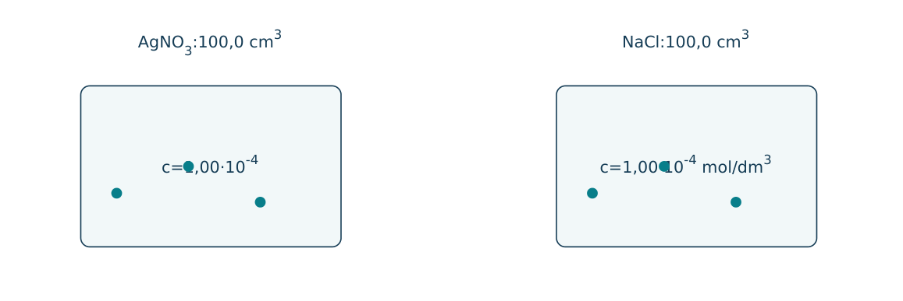
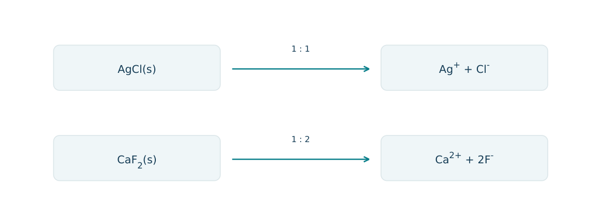
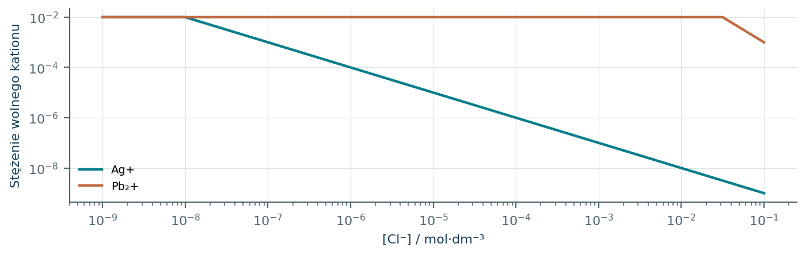
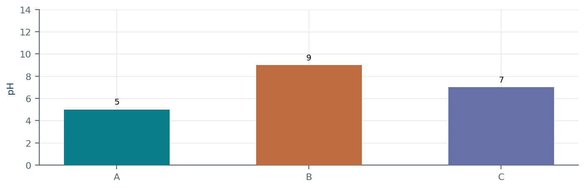
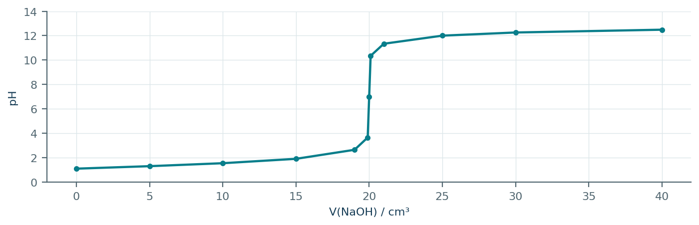
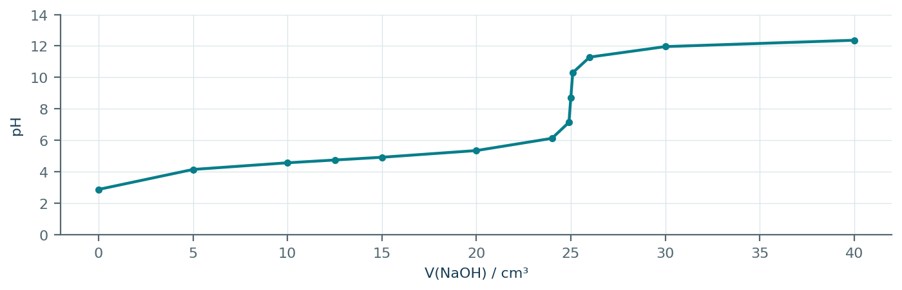
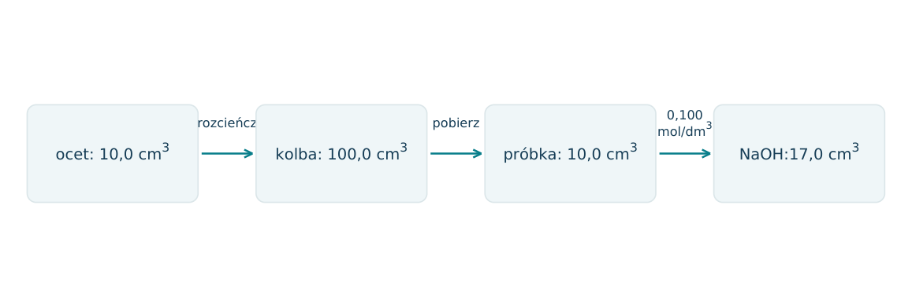
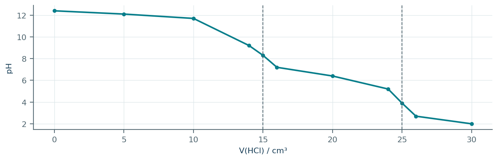
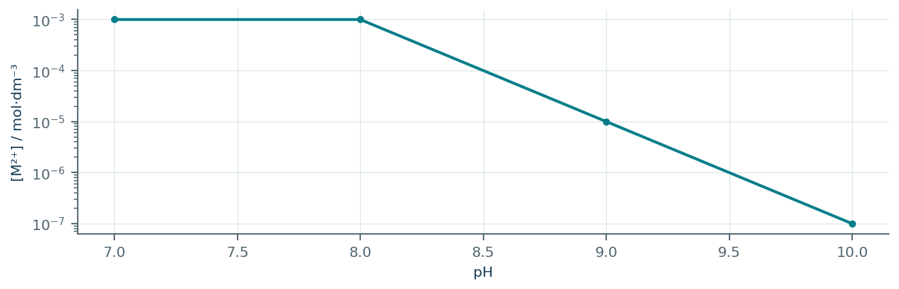

08.01 · 1 pkt
Napisz skrócone równanie jonowe reakcji HCl z NaOH.
Rozwiązanie
- H3O+ + OH- → 2H2O; dopuszczalne H+ + OH- → H2O.
50 zadań · 111 pkt · odpowiedzi rozwijane po samodzielnej próbie
← KatalogZadania PDFRozwiązania PDFDane do obliczeń: H 1; C 12; N 14; O 16; Na 23; Mg 24; Al 27; P 31; S 32; Cl 35,5; K 39; Ca 40; Cr 52; Mn 55; Fe 56; Cu 64; Zn 65; Ag 108; Br 80; I 127; Ba 137 (g/mol). NA = 6,02·1023 mol-1. Vm = 22,4 dm3/mol w warunkach normalnych (0°C, 1013 hPa). W 25°C Kw = 10-14. Dane podane w zadaniu mają pierwszeństwo.
Napisz skrócone równanie jonowe reakcji HCl z NaOH.
Oceń zdania A i B, wpisując P albo F. Każde zdanie fałszywe popraw lub krótko uzasadnij. A: W punkcie równoważnikowym kwasu octowego i NaOH roztwór może mieć pH większe od 7 w 25°C. B: Zmieszanie dowolnych dwóch roztworów soli zawsze daje osad.
Dla AgNO3(aq)+NaCl(aq) napisz równanie jonowe pełne i skrócone. Wyjaśnij, które jony pomijasz.
Napisz równanie hydrolizy CH3COO- i określ odczyn roztworu CH3COONa.
Napisz równanie reakcji NH4+ z wodą i określ odczyn roztworu NH4Cl.
Dlaczego wodny roztwór NaCl ma w szkolnym modelu odczyn obojętny?
Dla Na2CO3 napisz pierwszy etap hydrolizy i wskaż zasadę Brønsteda.
Wyjaśnij kwasowy odczyn roztworu FeCl3 równaniem z jonem uwodnionym.
Podaj, które sole dają zasadowy odczyn: KNO3, CH3COOK, NH4NO3, Na2CO3.
Dla soli NH4A podano Ka(NH4+)=5·10-10 i Kb(A-)=2·10-6. Przewidź odczyn i uzasadnij.
Napisz równanie jonowe wytrącania BaSO4.
Napisz równanie jonowe reakcji osadu Cu(OH)2 z nadmiarem HCl.
Napisz równanie jonowe reakcji CaCO3 z mocnym kwasem.
Podaj wyrażenie na Ks AgCl i CaF2.
Ks(AgCl)=1,0·10-10. Oblicz rozpuszczalność molową AgCl w czystej wodzie; pomiń inne równowagi.
Ks(CaF2)=4,0·10-11. Oblicz rozpuszczalność molową w czystej wodzie, pomijając hydrolizę.
Ks(AgCl)=1,0·10-10, [Cl-]=0,10 mol/dm3. Oszacuj [Ag+] nad osadem przy nadmiarze chlorków; pomiń kompleksy.
Po zmieszaniu [Ag+]=2·10-5 i [Cl-]=3·10-5 mol/dm3. Ks=10-10. Rozstrzygnij, czy zacznie powstawać osad.
Zmieszano równe objętości 10-5 mol/dm3 AgNO3 i 10-5 mol/dm3 NaCl. Ks=10-10. Czy powstanie osad?
Dla M(OH)2 podano Ks=4,0·10-16. Przy [M2+]=0,040 mol/dm3 oblicz [OH-], przy którym zaczyna się strącanie.
Jak dodanie wspólnego jonu zwykle wpływa na rozpuszczalność soli trudno rozpuszczalnej? Pomiń kompleksowanie.
Dlaczego dodanie HCl zwiększa rozpuszczanie CaCO3, choć nie dodaje jonów Ca2+?
25,0 cm3 HCl zobojętniono 20,0 cm3 NaOH 0,100 mol/dm3. Oblicz c(HCl).
Do 20,0 cm3 H2SO4 zużyto 30,0 cm3 NaOH 0,200 mol/dm3 do pełnego zobojętnienia. Oblicz c kwasu.
Zmieszano 100 cm3 HCl 0,100 mol/dm3 i 50 cm3 NaOH 0,100 mol/dm3. Oblicz pH w 25°C, objętości addytywne.
Zmieszano 50 cm3 HCl 0,100 mol/dm3 i 100 cm3 NaOH 0,100 mol/dm3. Oblicz pH w 25°C.
Jaki jest odczyn w punkcie równoważnikowym miareczkowania CH3COOH roztworem NaOH? Uzasadnij.
Jaki jest odczyn w punkcie równoważnikowym miareczkowania NH3 roztworem HCl? Uzasadnij.
Skok pH w miareczkowaniu mieści się w zakresie 7,8-10,0. Wybierz wskaźnik: oranż metylowy 3,1-4,4 czy fenoloftaleina 8,2-10,0. Uzasadnij.
Dlaczego biuretę przed użyciem przepłukuje się titrantem?
Czy dolanie wody do kolby z odmierzoną próbką kwasu zmieni liczbę moli NaOH potrzebną do równoważnikowego zobojętnienia?
Odczyty biurety wynoszą 1,20 cm3 przed i 24,70 cm3 po miareczkowaniu. Oblicz zużytą objętość i liczbę moli titranta 0,100 mol/dm3.
Zaprojektuj rozróżnienie roztworów Na2SO4 i NaCl odczynnikiem BaCl2. Podaj wynik i równanie.
Jak rozróżnić Na2CO3 i NaNO3 rozcieńczonym HCl? Podaj obserwację i równanie jonowe.
Oblicz przybliżone pH CH3COONa 0,10 mol/dm3, jeśli Ka(CH3COOH)=10-5 i Kw=10-14.
Oblicz przybliżone pH NH4Cl 0,10 mol/dm3, jeśli Kb(NH3)=10-5 i Kw=10-14.
10,0 cm3 octu rozcieńczono do 100,0 cm3. Do 20,0 cm3 tego roztworu zużyto 16,0 cm3 NaOH 0,100 mol/dm3. Oblicz c(CH3COOH) w occie.
W miareczkowaniu 25,0 cm3 HCl uzyskano V(NaOH): 24,9; 25,0; 25,1 cm3, c=0,100 mol/dm3. Oblicz średnią i c(HCl).
W mieszaninie [Ag+]=[Pb2+]=0,010 mol/dm3. Ks(AgCl)=10-10, Ks(PbCl2)=10-5. Przy jakich [Cl-] zaczyna się strącanie każdego osadu? Który pierwszy?
10,0 cm3 octu rozcieńczono do 100,0 cm3. Do 25,0 cm3 rozcieńczonej próbki zużyto 20,0 cm3 NaOH 0,100 mol/dm3. a) Napisz reakcję. b) Oblicz stężenie molowe kwasu w occie. c) Oblicz procent masowy dla gęstości octu 1,00 g/cm3. d) Wybierz wskaźnik dla skoku pH 7,8-10,0: oranż metylowy 3,1-4,4 czy fenoloftaleina 8,2-10,0.
Każdy numer 41-50 oznacza jedno zadanie główne; podpunkty są oceniane osobno.
Zmieszano po 100,0 cm3 roztworów AgNO3 i NaCl o c=1,00·10-4 mol/dm3. Przyjmij Ks(AgCl)=1,00·10-10 i brak kompleksowania. Schemat pokazuje objętości przed połączeniem; osad wydziela się dopiero po zmieszaniu.

08.41.1 (2 pkt) Oblicz Q jonowy bezpośrednio po zmieszaniu i rozstrzygnij o strącaniu.
08.41.2 (1 pkt) Oblicz stężenia wolnych Ag+ i Cl- w końcowej równowadze.
08.41.3 (2 pkt) Oblicz masę AgCl po ustaleniu równowagi, M=143,5 g/mol.
Oba stężenia maleją do 5,00·10-5; Q=2,50·10-9>Ks, powstaje osad.
Równe, √(Ks)=1,00·10-5 mol/dm3.
n osadu=(5,00-1,00)·10-5·0,2000=8,00·10-6 mol; m=1,148 mg.
Zestawiono dane dwóch soli w 25°C: AgCl, Ks=1,00·10-10 oraz CaF2, Ks=4,00·10-11. Rozpuszczają się w czystej wodzie; pomiń wszystkie reakcje uboczne. Na rysunku pokazano proporcje jonów powstających z jednostki soli.

08.42.1 (2 pkt) Zapisz wyrażenia Ks i powiąż je z rozpuszczalnością molową s.
08.42.2 (2 pkt) Oblicz s obu soli i wskaż lepiej rozpuszczalną molowo.
08.42.3 (1 pkt) Dlaczego nie wystarczy porównać samych liczb Ks?
AgCl: Ks=s2; CaF2: Ks=s(2s)2=4s3.
AgCl: 1,00·10-5; CaF2≈2,15·10-4 mol/dm3; większe s ma CaF2.
Sole mają inną stechiometrię dysocjacji i inne potęgi stężeń w wyrażeniach Ks.
Mieszanina zawiera po 0,0100 mol/dm3 Ag+ i Pb2+. Stopniowo zwiększa się [Cl-]. Dane: Ks(AgCl)=10-10, Ks(PbCl2)=10-5. Wykres pokazuje przewidywane stężenia wolnych jonów; pomiń zmianę objętości i kompleksy.

08.43.1 (2 pkt) Oblicz progowe [Cl-] początku strącania każdej soli.
08.43.2 (1 pkt) Oblicz [Cl-] potrzebne do zmniejszenia [Ag+] do 10-5 mol/dm3.
08.43.3 (1 pkt) Czy można w tych warunkach usunąć 99,9% Ag+ bez strącania PbCl2? Uzasadnij.
AgCl: 10-8; PbCl2: √(10-5/0,0100)≈0,0316 mol/dm3.
[Cl-]=10-10/10-5=10-5 mol/dm3.
Tak; pozostałe 10-5 to 0,1% początkowego Ag+, a wymagane Cl-=10-5 jest dużo mniejsze od progu PbCl2.
Próbki A-C to w losowej kolejności NH4Cl, CH3COONa i NaCl, wszystkie c=0,100 mol/dm3. Wykres pokazuje przybliżone pH. Ka(NH4+)=10-9, Kb(CH3COO-)=10-9; stosuj szkolny model idealny.

08.44.1 (2 pkt) Zidentyfikuj próbki i zapisz jonowe równania odpowiedzialne za nieobojętny odczyn.
08.44.2 (1 pkt) Potwierdź przybliżone pH A obliczeniem.
08.44.3 (1 pkt) Dlaczego jonu Na+ nie należy wpisywać jako źródła OH- w B?
A=NH4Cl: NH4++H2O⇌NH3+H3O+; B=CH3COONa: CH3COO-+H2O⇌CH3COOH+OH-; C=NaCl.
[H3O+]≈√(10-9·0,100)=10-5 mol/dm3; pH≈5.
Na+ nie jest tu zasadą Brønsteda; OH- powstaje z reakcji anionu octanowego z wodą.
Miareczkowano 25,0 cm3 HCl roztworem NaOH 0,100 mol/dm3. Krzywa odnosi się do 25°C, a punkt równoważnikowy wypada przy 20,0 cm3. Objętości są addytywne.

08.45.1 (2 pkt) Oblicz początkowe stężenie HCl.
08.45.2 (1 pkt) Oblicz pH po dodaniu 10,0 cm3 titranta.
08.45.3 (1 pkt) Wyjaśnij, dlaczego w punkcie równoważnikowym pH wynosi 7, a nie 1,10 jak początkowo.
c=0,100·20,0/25,0=0,0800 mol/dm3.
Pozostaje 0,00100 mola H+ w 0,0350 dm3; pH≈1,54.
H+ i OH- zużyły się, pozostaje sól mocnego kwasu i mocnej zasady, której jony nie zmieniają istotnie odczynu w 25°C.
Miareczkowano 25,0 cm3 HA 0,100 mol/dm3 NaOH 0,100 mol/dm3. Dla mieszaniny HA/A- podano pH=pKa+log([A-]/[HA]). Krzywa ma pH≈4,74 przy połowie objętości równoważnikowej.

08.46.1 (2 pkt) Odczytaj objętość równoważnikową i wyznacz Ka z punktu połowicznego.
08.46.2 (1 pkt) Wyjaśnij zasadowy odczyn w punkcie równoważnikowym.
08.46.3 (1 pkt) Dobierz wskaźnik o zakresie 8,2-10,0 albo 3,1-4,4 i uzasadnij.
Veq=25,0 cm3; przy 12,5 cm3 stężenia HA i A- są równe, pKa≈4,74; Ka≈1,8·10-5.
A-+H2O⇌HA+OH-; produkt zobojętniania reaguje z wodą.
Zakres 8,2-10,0, np. fenoloftaleina; obejmuje skok pH wokół zasadowego punktu równoważnikowego.
10,0 cm3 octu o gęstości 1,02 g/cm3 rozcieńczono w kolbie do 100,0 cm3. Próbka 10,0 cm3 rozcieńczonego roztworu zużyła 17,0 cm3 NaOH 0,100 mol/dm3. Załóż, że jedynym reagującym kwasem jest CH3COOH.

08.47.1 (2 pkt) Oblicz stężenie molowe kwasu w occie.
08.47.2 (2 pkt) Oblicz procent masowy kwasu.
08.47.3 (1 pkt) Czy dolanie wody do kolby stożkowej po odmierzeniu próbki zmieni n titranta w równoważniku?
n w próbce=0,00170 mol, c rozcieńczonego=0,170; c octu=1,70 mol/dm3.
1 dm3 octu: 1020 g roztworu, 102 g kwasu; cp=10,0%.
Nie; zmienia stężenie, lecz nie liczbę moli kwasu w odmierzonej próbce.
Miareczkowano 20,0 cm3 mieszaniny NaOH i Na 2CO3 roztworem HCl 0,100 mol/dm3. Do pierwszego punktu zużywa się H+ na OH- oraz CO32-→HCO3-. Do drugiego dochodzi HCO3-→CO2+H2O. Łączne objętości wskazuje krzywa.

08.48.1 (2 pkt) Odczytaj obie objętości i ułóż równania na a=n(NaOH), b=n(Na 2CO3).
08.48.2 (2 pkt) Oblicz stężenia molowe obu składników.
08.48.3 (1 pkt) Dlaczego nie można przypisać całego zużycia kwasu do NaOH?
V=1=15,0, V=2=25,0 cm3; a+b=0,00150, a+2b=0,00250 mol.
b=0,00100, a=0,000500 mol; c(Na 2CO3)=0,0500, c(NaOH)=0,0250 mol/dm3.
Węglan także przyjmuje protony, po dwa na CO32- do pełnego zakwaszenia; zawyżono by n(NaOH).
Przed miareczkowaniem końcówka biurety zawierała 0,20 cm3 powietrza, które zniknęło podczas dozowania. Odczyty wyniosły 10,00 i 30,00 cm3. Stężenie NaOH 0,100 mol/dm3; próbka HCl miała 20,00 cm3.
08.49.1 (2 pkt) Oblicz objętość NaOH, która rzeczywiście trafiła do kolby.
08.49.2 (1 pkt) Oblicz prawidłowe c(HCl) i wynik z błędnego użycia pełnych 20,00 cm3.
08.49.3 (1 pkt) Zaproponuj czynność zapobiegającą błędowi i wyjaśnij jej sens.
20,00-0,20=19,80 cm3.
Prawidłowo 0,0990; błędnie 0,1000 mol/dm3.
Przed pierwszym odczytem napełnić końcówkę titrantem i usunąć pęcherzyk; odczytana zmiana objętości będzie wtedy objętością dostarczoną do kolby.
Roztwór M2+ ma początkowo c=0,00100 mol/dm3. Ks(M(OH)2)=10-15. Wykres przedstawia stężenie rozpuszczonego M2+ po ustaleniu równowagi. Pomiń kompleksy i zmianę objętości; temperatura 25°C.

08.50.1 (2 pkt) Oblicz pH początku strącania.
08.50.2 (1 pkt) Oblicz procent M2+ wytrącony przy pH=9.
08.50.3 (1 pkt) Zapisz jonowe równanie powstawania osadu i wyjaśnij spadek rozpuszczalności przy wzroście pH.
[OH-]=√(10-15/10-3)=10-6; pOH=6, pH=8.
Pozostaje 10-5 z początkowego 10-3, czyli 1%; wytrącono 99%.
M2++2OH-→M(OH)2(s); wzrost [OH-] wymusza spadek [M2+] nad osadem przy stałym Ks.